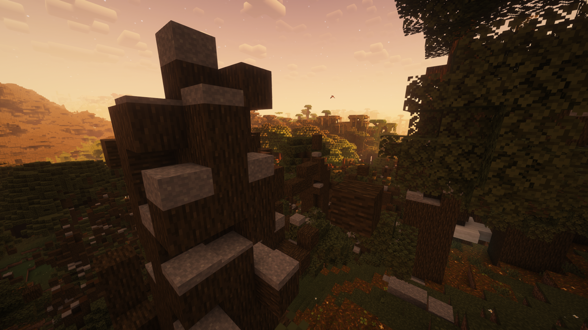
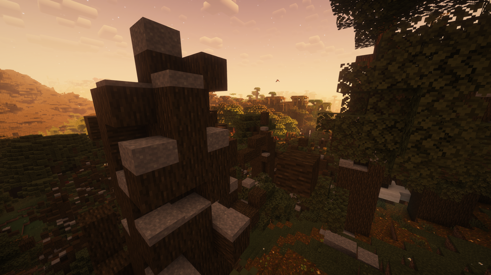

Hi, I'm tzainten. I like coding.
United States
Azeorth is a private Minecraft 1.20 modpack that adds progression elements to guide players towards the end.
The Goal
I wanted this modpack to feel somewhat like an RPG. The goal was to motivate players to explore the world, and try to gear up for the final boss.
Crash Fix
While I was putting this together, the BedrockIfy mod had a fatal bug: whenever you held a Bundle in your hand, your game would crash!
This was quite a simple fix: all I had to do was add in two additional checks for tooltips on both Bundles and Ender Chests. Voila!
End Island Generation
There was also 2 more mods that were very important to me: Stellarity Lite & True Ending: Ender Dragon Overhaul.
These mods were conflicting. The end towers had problems with generation, and the Ender Dragon wasn't spawning correctly.
Stellarity was causing the issues, so I decided to tinker around with it. It took a bit of trial and error here, but it was honestly pretty easy!
After I made my changes, I managed to keep the decorations from Stellarity while also keeping the changed Boss AI behavior from True Ending!
Summary
Fixing these bugs felt nice. I feel more comfortable navigating other people's code now.
I used to struggle a lot reading other people's code, because I hadn't wrote it. But this project helped me to grow a bit!
 
